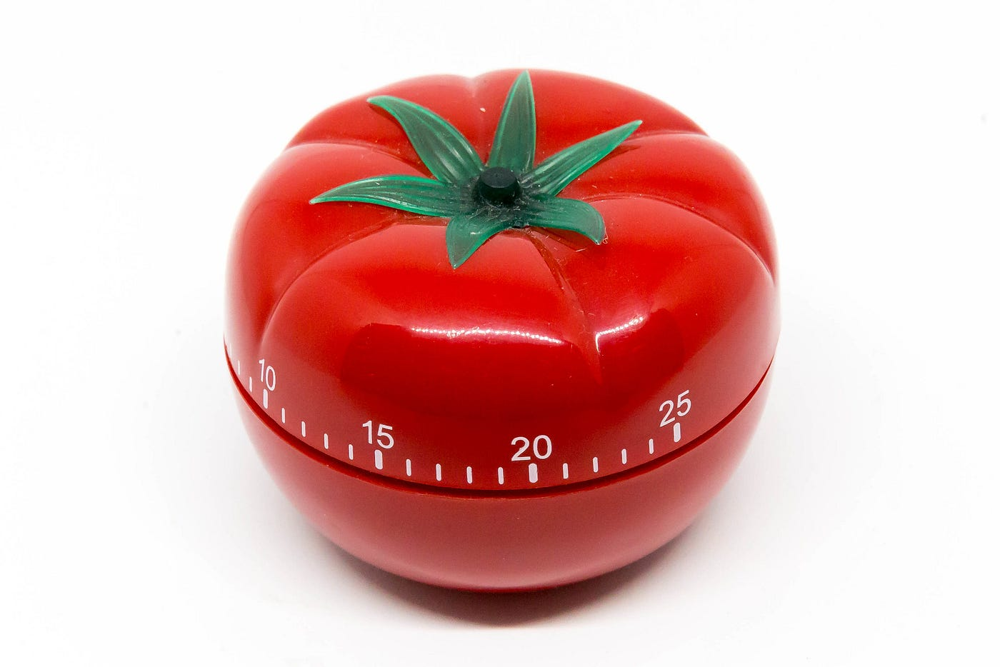

What is the pomodoro technique?
A method for staying focused and mentally fresh
Step 1 - Pick a task
Step 2 - Set a 25-minute timer
Step 3 - Work on your task until the time is up
Step 4 - Take a 5 minute break
Step 5 - Every 4 pomodoros, take a long break
Contact
GitHub
LinkedIn
Pomodoro Clock

I'm here to help your programming study
Short Break
Long Break
25
:
00
Start
Stop
Reset